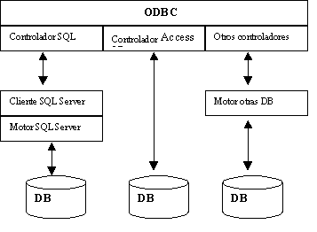
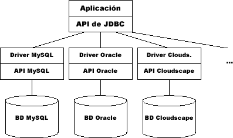

Inicialmente cada SGBD tiene su propia conexión y su propio API
Cada empresa desarrolladora de un SGBD implementaba soluciones propietarias específicas para su sistema, pero pronto se dieron cuenta de que colaborando conjuntamente podían sacar mayor rendimiento y avanzar mucho más rápidamente.
Primer estándar de conectividad
ODBC significa Open Database Connectivity (Conectividad de Base de Datos Abierta). Es un estándar de interfaz desarrollado por Microsoft que permite que las aplicaciones se conecten a diferentes sistemas de gestión de bases de datos (DBMS) de manera uniforme, sin importar el fabricante o el tipo de base de datos.
La llegada del ODBC representó un avance sin precedentes en el camino hacia la interoperabilidad entre bases de datos y lenguajes de programación. La mayoría de empresas desarrolladoras de sistemas gestores de bases de datos incorporaron los drivers de conectividad a las utilidades de sus sistemas y los lenguajes de programación más importantes desarrollaron bibliotecas específicas para soportar el API ODBC.
Java no de adapta bien
Aunque la industria aceptó ODBC como medio principal para acceso a bases de datos en Windows, la verdad es que no se introduce bien en el mundo Java, debido a la complejidad que presenta ODBC, y que entre otras cosas ha impedido su transición fuera del entorno Windows.
Sistema de conexión ODBC configurado usando diferentes controladores (drivers) y un API estándar.

JDBC (Java Database Connectivity)
Se trata de un API bastante similar a ODBC en cuanto a funcionalidad, implementado específicamente para usar con el lenguaje Java, adaptado a las especificidades de Java.
La funcionalidad se encuentra capsulada en clases (ya que Java es un lenguaje totalmente orientado a objetos) y además, no depende de ninguna plataforma específica, de acuerdo con la característica multiplataforma defendida por Java.
La idea en el desarrollo de JDBC era intentar ser tan sencillo como fuera posible, pero proporcionando a los desarrolladores la máxima flexibilidad.
Java, mediante JDBC, permite simplificar el acceso a bases de datos relacionales, proporcionando un lenguaje mediante el cual las aplicaciones pueden comunicarse con motores de bases de datos.
Objetivos - Sun desarrolló este API (java.sql.*)para el acceso a bases de datos, con tres objetivos principales en mente:
Los fabricantes de Los Sistemas Gestores de Bases de Datos proporcionan la implementación de esa interfaz (Drivers).
JDBC es similar en estructura a ODBC. Una aplicación JDBC está compuesta de varias capas, como se muestra en la figura

La capa superior en este modelo es la aplicación Java. Las aplicaciones Java son portátiles: puede ejecutar una aplicación Java sin modificaciones en cualquier sistema que tenga instalado una maquina virtual java (Java runtime environment).
Una aplicación Java que utiliza JDBC puede comunicarse con muchas bases de datos con pocas modificaciones, si es que las hay. Al igual que ODBC, JDBC proporciona una manera consistente de conectarse a una base de datos, ejecutar comandos y recuperar los resultados.
Al igual que ODBC, JDBC no impone un lenguaje de comando común: puede usar la sintaxis específica de Oracle cuando está conectado a un servidor Oracle y la sintaxis específica de MySQL cuando está conectado a un servidor MySQL.
La Api JDBC tiene la interfaz DriverManager, responsable de localizar un controlador JDBC que necesita la aplicación. Cuando una aplicación cliente solicita una conexión de base de datos, la solicitud se expresa en forma de una URL (Uniform Resource Locator). Una URL de JDBC es similar a las URL que utiliza con un navegador web. Para conectarnos a la base de datos Oracle, por ejemplo: jdbc:oracle:thin:ejemplo/ejemplo@localhost:1521:XE
A medida que cada controlador se carga en una Máquina Virtual de Java (VM), se registra con el DriverManager JDBC . Cuando una aplicación solicita una conexión, el DriverManager pregunta a cada Controlador si puede conectarse a la base de datos especificada en la URL dada. Tan pronto como encuentra un controlador adecuado, la búsqueda se detiene y el controlador intenta establecer una conexión con la base de datos. Si el intento de conexión falla, el Controlador lanzará una SQLException a la aplicación. Si la conexión se completa con éxito, el controlador crea un objeto de conexión y lo devuelve a la aplicación.